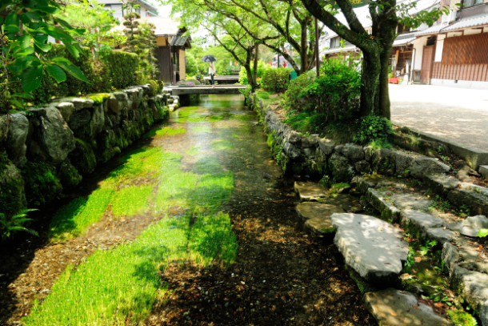
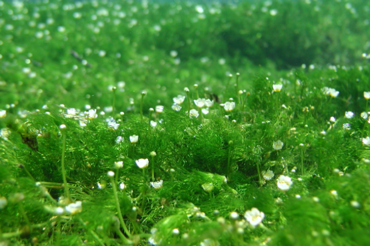
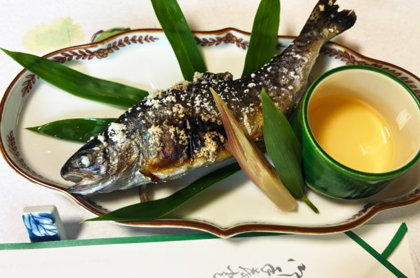
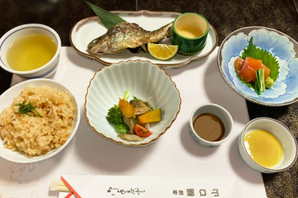

最新の情報は 公式サイトのツアーページ をご覧ください。
夏限定！清流に咲く梅花藻と、豊臣兄弟ゆかりの城下町・長浜さんぽ
※大人・子ども同額
※旅行代金には食事代が含まれております。
本ツアーの募集は終了いたしました
貸切で再現できる場合もございますのでご相談ください。お問合せフォームはこちら
＜MKトラベルTOPはこちら▶＞
＜おすすめツアーはこちら▶＞
滋賀・醒ヶ井宿の清流に咲く、夏だけの小さな花「梅花藻（ばいかも）」を見に行きませんか？
澄んだ地蔵川に揺れる白い花は、まるで水の中に咲く梅のよう。
ひんやりとした空気と美しい水辺の風景が、夏の暑さを忘れさせてくれます。
ご昼食は「本陣 樋口山」にて、醒井宿の清らかな名水を活かした虹鱒料理をご用意。
この土地ならではの味覚とともに、涼やかな夏旅をお楽しみください。
その後は、豊臣秀吉ゆかりの長浜城や、レトロな町並みが人気の黒壁スクエア周辺を自由散策！
ガラスショップ巡りや食べ歩き、お土産探しなど、思い思いの時間をお楽しみいただけます。
さらに、ご希望の方は豊臣秀吉公を祀る豊国神社へ徒歩参拝も可能。
夏の涼景色と歴史情緒を楽しむ、期間限定の日帰り旅へぜひお出かけください。
行程
| 9:30 | 京都駅八条口MKタクシーのりば （集合・出発） |
| 11:00 | 醒井 地蔵川 ＜梅花藻鑑賞・自由散策／約30分＞ |
| 11:30 | 日本料理 本陣 樋口山 ★虹鱒料理・本陣昼御膳 ＜昼食／約60分＞ |
| 13:00 | 長浜城 ＜自由散策／約50分＞ |
| 14:00 | 黒壁スクエア <自由散策／約60分＞ |
| 16:30 | 京都駅（解散） |
※渋滞等で予定通りの滞在時間をお取りすることができない場合がございます。予めご了承ください。
※昼食は主に川ものを材料となりますので、苦手にされていたりアレルギー等に関しましては献立の変更も可能です。
※梅花藻の生育が気象条件により芳しくない場合もございます。予めご了承ください。
※写真撮影を目的としたツアーではございません。
当日の状況により撮影時間/環境は保証いたしかねます。何卒ご理解のうえご参加お願いいたします。
醒井 地蔵川


写真提供：（公社）びわこビジターズビューロー
写真提供：（公社）びわこビジターズビューロー
日本料理 本陣 樋口山




写真はイメージです
長浜城


写真提供：（公社）びわこビジターズビューロー
黒壁スクエア


写真提供：（公社）びわこビジターズビューロー
【MKトラベルLINE公式アカウント】
MKトラベルの新規ツアー情報をLINEでお届けいたします

【各SNSでも京都の情報やツアー情報をお届けしています】


旅行条件
| ツアー番号 | T275AA |
| 出発地 | 京都市 |
| 添乗員／ガイド | なし（乗務員がその業務を代行いたします）／なし |
| 食事 | あり（昼食1回） |
| 最少催行人数 | 6名様 |
お申込みについてのご注意
※最少催行人数は6名様です。最少催行人員に満たない場合は、旅行の実施を取りやめることがあります。出発の3日前にその旨をご連絡し、お客様から当社がお預かりしている旅行費用の全額をお返しいたします。
※旅行条件・旅行代金は、2026年5月1日現在を基準としています。
※行程および帰着時間は交通事情などにより変更になる場合があります。
※お申込みの前に弊社の募集型企画旅行規約をご確認ください。
よくある質問
Q.1名ですが、申し込みできますか？
A.はい。お一人参加の方もたくさんいらっしゃいますので、お気軽にお申し込みください。
Q.参加したかったけど、日程が合いません／終了していました
A.貸切で再現できる場合もございますのでご相談ください。お問合せフォームはこちら
本ツアーの募集は終了いたしました
貸切で再現できる場合もございますのでご相談ください。お問合せフォームはこちら
＜MKトラベルTOPはこちら▶＞
＜おすすめツアーはこちら▶＞
・TACPOカード
・クレジットカード決済
・コンビニ決済
お支払方法詳細はこちら
お客様のご都合でご予約をキャンセルされる場合は、すみやかに下記お問合せ先までご連絡ください。
キャンセル料
11日目に当たる日以前
無料
10日目に当たる日以前
20%
7日目に当たる日以前
30%
旅行開始日の前日
40%
旅行開始日の当日
50%
旅行開始後又は無連絡
100%